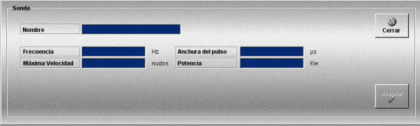

Sonda
La creación y edición de sondas se realiza mediante la siguiente ventana.

Esta ventana permite definir las sondas que podrán ser añadidas a las unidades participantes en los Ejercicios.
Para cada sonda se definen los siguientes datos:
Nombre: Nombre de la sonda.
Formato: caracteres alfanuméricos.
Frecuencia: Frecuencia de operación de la sonda.
Unidades: hercios
Rango: 0 - 15000
Velocidad máxima: Velocidad máxima a la que puede operar la sonda.
Unidades: nudos
Rango: 1 - 60
Anchura de pulso: Ancho de pulso.
Unidades: microsegundo
Rango: 0 - 5000
Potencia: Potencia de transmisión.
Unidades: kilovatios
Rango: 0.0 - 1000.0